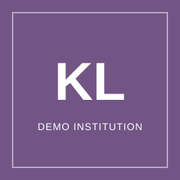
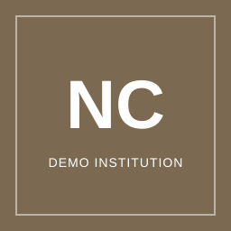

Dashboard
KPT / EMGS PortalNotifications4 unread updates
National Application Trend
Weekly applications received across participating universities.
Programme Pipeline
Programmes already submitted to KPT for decision.
Pending KPT Approval3432%
Changes Requested1211%
Resubmitted109%
Approved4240%
Rejected88%
6 change requests older than 7 days
11 universities inactive this week
Attention Queue
Items requiring KPT or EMGS action.
Programme approval overdueGlobal Health Innovation Lab has been pending for 9 days.Programme
Changes request overdueCreative Media Summer School needs university follow-up.Programme
Delayed application caseAisha Bello is over 60 days and needs escalation review.Application
University compliance actionMetro Skills College has not completed its first login and password change.University
Top 10 Source Countries
National applicant distribution across participating universities.
| University | Status | Programmes | Applicants | Avg Response | Last Activity | Action |
|---|---|---|---|---|---|---|
| Universiti Cyberjaya MalaysiaEDU-UCM-2026-014 | Active | 12 | 184 | 2 days | 17 Aug 2026 | |
 Kuala Lumpur Institute of DesignEDU-KLID-2026-019 | Pending Review | — | — | 3 days | 16 Aug 2026 | |
| Penang Global UniversityEDU-PGU-2026-008 | Active | 9 | 121 | 5 days | 14 Aug 2026 | |
| Metro Skills CollegeEDU-MSC-2026-021 | Account Created | — | — | Pending | 9 Aug 2026 | |
| Borneo International UniversityEDU-BIU-2026-011 | Clarification Requested | — | — | 4 days | 15 Aug 2026 | |
 North Coast Skills AcademyEDU-NCSA-2026-026 | Rejected | — | — | - | 11 Aug 2026 |
UNIVERSITY REGISTRY
New registrationAdd new university
Create an institution profile and nominate its primary contact.
Temporary tool · Fill this form with fictional details and a sample logo.
University name
Institution reference
| Programme | University | Category | Status ?Pending KPT Approval Programme has been submitted by the university and is waiting for KPT review. Changes Requested KPT has asked the university to correct or clarify programme details before approval. Resubmitted University has sent corrected or post-approval changes back to KPT for another review. Approved KPT has accepted the programme. KPT can launch it as Live when ready. Rejected KPT declined the submission and the programme cannot proceed in its current form. | Submitted | Age | Action |
|---|---|---|---|---|---|---|
| Tropical Biodiversity Programme | Universiti Cyberjaya Malaysia | Nature & Environment | Pending KPT Approval | 8 Aug 2026 | 9 days | |
| Malay Language & Culture | Kuala Lumpur Institute of Design | Language & Culture | Changes Requested | 1 Aug 2026 | 16 days | |
| Digital Entrepreneurship Bootcamp | Penang Global University | Business & Innovation | Resubmitted | 9 Aug 2026 | 8 days | |
| Malaysian Heritage Experience | Borneo International University | Culture & Heritage | Approved | 13 Aug 2026 | 4 days | |
| Food Culture Field School | Metro Skills College | Culinary Culture | Rejected | 10 Aug 2026 | 7 days |
| Applicant | University | Programme | Stage | Last Updated | Applied date | Action ?View Opens the application record for review. Escalate Appears only when an active application is more than 60 days old, so KPT/EMGS can follow up on long-running university or applicant delays. |
|---|---|---|---|---|---|---|
| Priya MenonEDT-2026-002148India | Universiti Cyberjaya Malaysia | Tropical Biodiversity Programme | New Application | 17 Aug 2026 | 2 days | |
| Li WeiEDT-2026-002151China | Penang Global University | Digital Entrepreneurship Bootcamp | Documents Required | 15 Aug 2026 | 4 days | |
| Aisha BelloEDT-2026-002160Nigeria | Kuala Lumpur Institute of Design | Malay Language & Culture | Req. Document Submitted | 13 Aug 2026 | 67 days | |
| Kenji SatoEDT-2026-002177Japan | Borneo International University | Malaysian Heritage Experience | Approved | 12 Aug 2026 | 7 days | |
| Ravi NairEDT-2026-002188Malaysia | Universiti Cyberjaya Malaysia | Sustainable Cities Programme | New Application | 11 Aug 2026 | 8 days | |
| Sofia MartinezEDT-2026-002194Spain | Metro Skills College | Food Culture Field School | Documents Required | 10 Aug 2026 | 61 days | |
| Daniel BrownEDT-2026-002205Australia | Penang Global University | Applied AI for Tourism | Req. Document Submitted | 9 Aug 2026 | 12 days | |
| Chen WeiEDT-2026-002216China | Borneo International University | Marine Conservation Lab | Approved | 8 Aug 2026 | 72 days | |
| Sara KhanEDT-2026-002228India | Kuala Lumpur Institute of Design | Malay Language & Culture | Withdrawn | 6 Aug 2026 | - | |
| Daichi WatanabeEDT-2026-002239Japan | Metro Skills College | Food Culture Field School | Rejected | 5 Aug 2026 | - | |
| Lim Mei XinEDT-2026-002241Malaysia | Universiti Cyberjaya Malaysia | Digital Entrepreneurship Bootcamp | Withdrawn | 4 Aug 2026 | - |
| Name | Role | Status | Last Login | Action | |
|---|---|---|---|---|---|
| Farah Kamil | farah.kamil@kpt.example | KPT Admin | Active | 17 Aug 2026, 9:12 AM | |
| Ravi Chandran | ravi@emgs.example | EMGS Officer | Active | 16 Aug 2026, 4:10 PM | |
| Siti Hanis | hanis@kpt.example | KPT Officer | Inactive | 10 Aug 2026, 11:05 AM |
| Date & Time | User | Action | Entity |
|---|---|---|---|
| 17 Aug 2026, 9:20 AM | Farah Kamil | Approved Borneo Rainforest Immersion | Programme |
| 16 Aug 2026, 4:15 PM | Ravi Chandran | Escalated application case EDT-2026-002160 | Application |
| 16 Aug 2026, 2:30 PM | System | Marked KLID compliance as Action Required | University |
Help & Support
Guide for KPT / EMGS oversight teams using this prototype.
What This Dashboard Is For
This dashboard gives KPT / EMGS one place to monitor universities, programme approvals, application delays, compliance signals, and administrative actions.
Daily Workflow
Start from the Dashboard attention queue, open the item that needs action, review the side panel, then approve, request clarification, escalate, or record the decision.
Audit Trail
Prototype actions such as approvals, clarification requests, user edits, and escalations are written into Audit Log so the demo can show accountability.
| Area | Primary Use | Common Action |
|---|---|---|
| Dashboard | Quickly see national-level activity and items requiring attention. | Use attention queue buttons to jump to the right operational tab. |
| Universities | Monitor institutions, credentials, programmes, applicants, and compliance status. | View details, request clarification, suspend, reactivate, or clear compliance. |
| Programme Approvals | Review programmes submitted by universities before they can go live. | Approve, reject, or request changes with clear KPT notes. |
| Applications | Monitor delayed or escalated applications across universities. | Open the side panel, request university updates, or escalate cases above 60 days. |
Table View
Use the university table to scan status, programme count, applicant volume, compliance signal, average response time, and last activity.
Side Review
Click View to open the right-side panel. It shows overview, programme breakdown, compliance records, credentials, and KPT actions without leaving the list.
Full Details
Use Expand full view when a longer review is needed, especially for credentials, compliance history, and programme breakdown.
Compliance actions: Request clarification for missing or unclear credentials, mark watch for risk monitoring, clear compliance when resolved, suspend when participation must stop, and reactivate after issues are fixed.
Approval Flow
Programmes move from Draft to Pending KPT Approval. KPT can approve and launch live, or request changes. Reworked approved programmes return as Resubmitted.
Reviewing A Programme
Click View to inspect submitted details, overview, activities, learning scope, images, and university notes.
KPT Decisions
Approve when complete, request changes when the university must correct details, or reject when the programme cannot proceed.
| Status | Meaning | Who Acts |
|---|---|---|
| Pending KPT Approval | Programme has been submitted and is waiting for KPT review. | KPT |
| Changes Requested | KPT has asked the university to correct or complete programme details. | University |
| Resubmitted | An approved programme was edited and sent back for approval. | KPT |
| Live | KPT has launched the programme and applications can be received. | Monitor only |
| Archived | Programme is no longer active, but history remains visible. | University / KPT monitor |
Purpose
The Applications tab is for KPT / EMGS monitoring, especially long-running cases and applications that need university follow-up.
Age Filter
Use Below 60 days for normal monitoring and 60 days and above to find cases that may need escalation.
Side Panel
Click View to see applicant details, university, programme, documents, current stage, and available KPT / EMGS actions.
Escalation rule: Active applications older than 60 days show an Escalate option. Closed applications such as Approved, Rejected, or Withdrawn are not treated as active age issues.
Administration
Manage dashboard staff accounts. Add users, edit roles, or update account status from User Management.
Audit Log
Review actions recorded across the prototype, including decisions, user edits, clarification requests, and escalations.
Settings
Control notification preferences and security settings for the logged-in KPT / EMGS staff user.
Contact Support
Email: support@malaysiaedutourism.example
Response target: 1 working day for demo support, same day for blocked stakeholder walkthroughs.
Include: Page name, action attempted, applicant/programme/university reference, and screenshot if possible.
Notifications
Configure oversight alerts.
Sidebar visibility
Choose which support content appears in your dashboard.